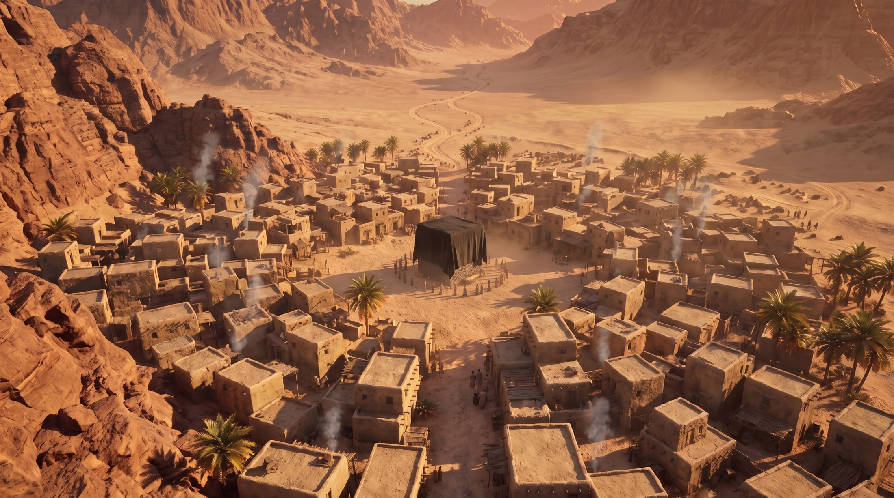
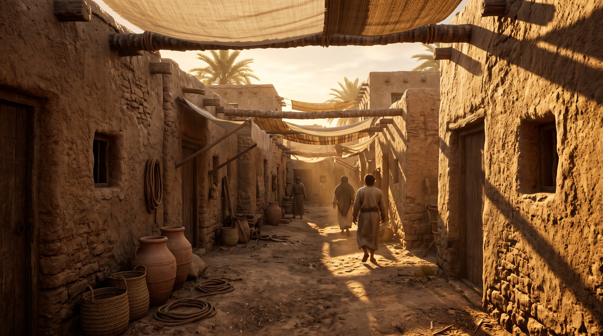
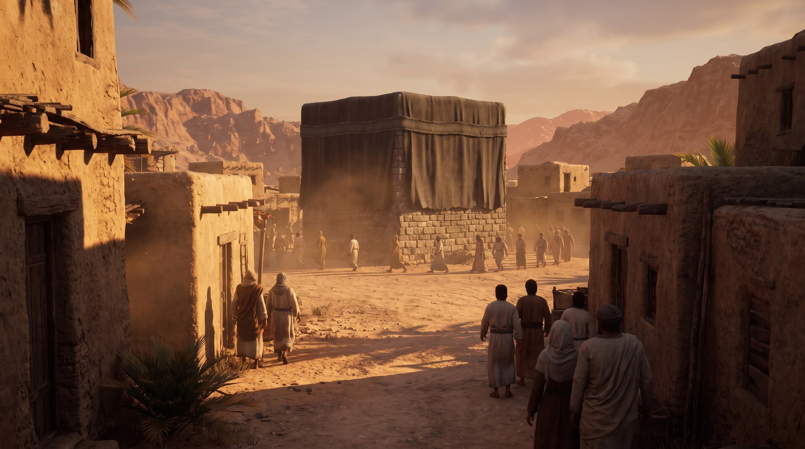

שלוש תמונות. זה כל מה שצריך כדי להתחיל — כל השאר נגזר מהן. לחצי „הורדה“ ותקבלי את הקובץ להעלאה ל־Magnific.
אחרי הקטע הראשון אין יותר צורך בתמונות ממני — פריים הפתיחה של כל קטע הוא הפריים האחרון של הקודם. ואת הפריים האחרון אני מוציא לך: פשוט תשמרי את ה־mp4 בתיקייה, ואני שולף ממנו את התמונה. את לא צריכה לעשות את זה בעצמך.



זה ה־End frame של W 1, לא ה־Start. הוא מחייב את הקליפ להגיע בדיוק לרגע שבו הקובייה נכנסת — ומכיוון שהוא גם הפריים האחרון, הוא יהיה הפתיחה של W 2.
הורדההכרטיס הכחול בגיליון הפרומפטים הוא ייצור תמונה, לא וידאו. הוא צריך שתי הפניות (References), לא פריים פתיחה — וזו הנקודה היחידה בכל התהליך שבה מותר להשתמש בהפניות, ולכן זה מה שנועל את הסגנון.
ההפניות הן בדיוק שני הקבצים שכבר הורדת: A-alley.jpg ו־B-kaaba.jpg. תעלי את שניהם כ־References.
CIN1-start.jpg כ־Start frame, מדביקה את הפרומפט, מריצה.W1-start.jpg כ־Start frame ו־W1-end.jpg כ־End frame.concept/chapter1/film/ בשמות CIN1.mp4 ו־W1.mp4.המגבלות של המודל: רוחב 300–6000 פיקסלים, יחס בין 0.4 ל־2.5, ופורמטים jpeg / png / webp. שלוש התמונות כאן בתוך הטווח בנוחות (2200×1228, יחס 1.79).
אם בכל זאת יש תקלה — תגידי לי מה כתוב בשגיאה ואני מכין גרסה בגודל אחר.
אלה התמונות שכבר אישרת בסבב ה־POC, אבל אם עכשיו משהו צורם — עדיף לתקן עכשיו. כל התסריט משתרשר מהן, ואחרי שנייצר עשרה קטעים כבר יהיה יקר לחזור.
{kind=link}
{kind=link}
{kind=link}